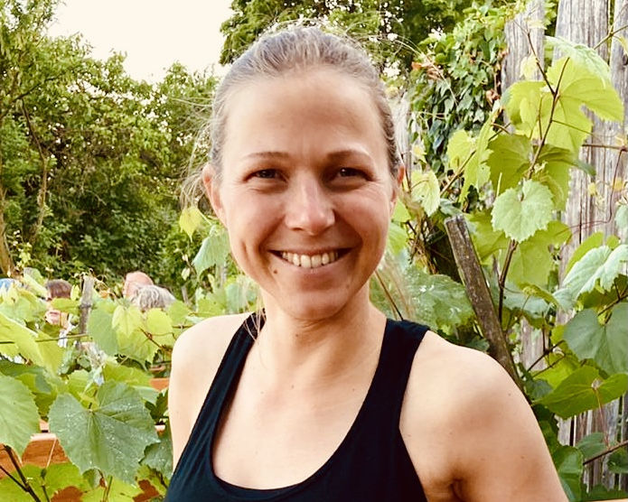

Karola Reifetshamer

Geboren und aufgewachsen in Wels, OÖ
Besuch eines Sportgymnasiums
Akademische Bodyvitaltrainerin (Body&Health Academy, Haslach)
Medizinische Masseurin (Ausbildungszentrum Bergler, Graz)
Yoga Lehrerin (Young Ho Kim, Wels)
Feldenkrais Practitioner (Angelika Feldmann, St.Gilgen)
Personzentrierte Psychotherapeutin (Forum, Wien)
Focusing Beraterin (DFI, Würzburg)
Klinische Sexologin i.A. (ISP, Wien)
Fortbildungen:
Tanz- und Gestalttherapie auf der Basis des Life/Art Process (Ulla Schorn, Puchberg)
Atem und Achtsamkeitstherapie (Peter Cubasch, Wien)
Fokussierende Körperarbeit (Klaus Renn, Würzburg)
Somatic Experiencing Beginnerlevel (Itta Wiedenmann, Seitenstetten)
Continuum (Somatische Akademie, Berlin)
Ich liebe es zu tanzen, herumzukugeln, zu atmen, auf Innen-Raum-Forschung zu gehen, Lebendigkeit in mir fließen zu spüren… Ganz da zu sein…
Ich versuche, der Welt mit Neugierde, Mut und Spielfreude zu begegnen…
Ich bin offen für philosophische und spirituelle Fragen…
Ich habe nie verlernt, zu Staunen…
Psychotherapeutische Tätigkeit seit 2017
beim Verein iwik, im Donaupark Klosterneuburg und in freier Praxis.
“The good life is a process, not a state of being. It is a direction not a destination.” – Carl R. Rogers (On Becoming a Person)